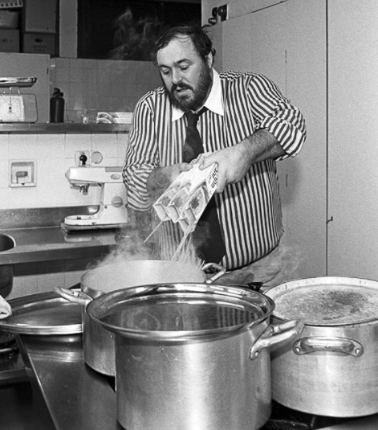

It is all too easy to feel that cooking is a burden, a distraction, and a chore. Let this quote serve as a reminder every time you pull up a recipe to cook that you are about to partake in an ancient, life-sustaining ritual and to find joy in the mundane routines that life is full of.
"One of the very nicest things about life is the way we must regularly stop whatever it is we are doing and devote our attention to eating."
-Luciano Pavarotti